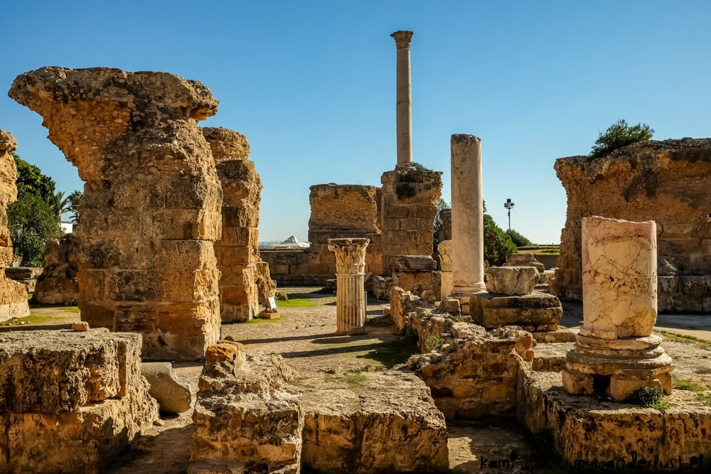
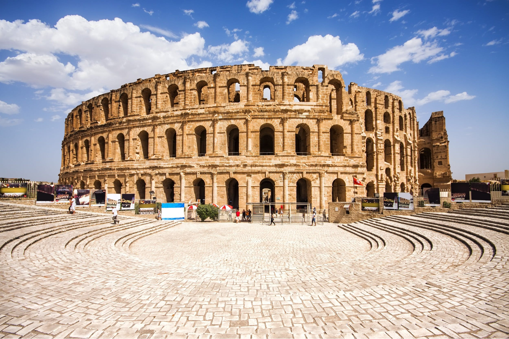
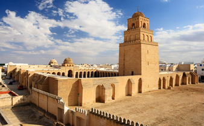
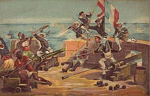
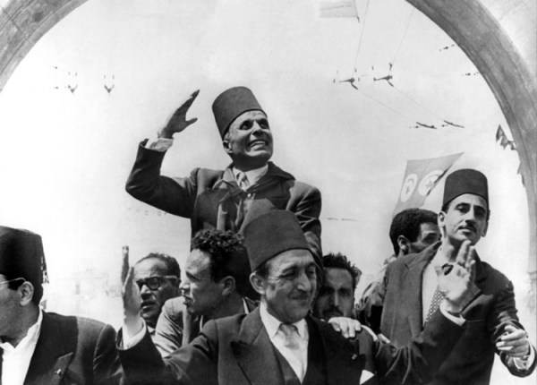
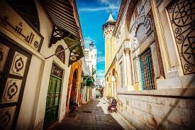

"Welcome to Tunisia, a captivating blend of history, culture, and natural beauty nestled in the heart of North Africa. With its ancient ruins, bustling medinas, and sun-kissed beaches, Tunisia offers a journey through time and a mosaic of experiences waiting to be discovered. From the majestic Roman ruins of Carthage to the labyrinthine streets of Tunis' medina, every corner of this diverse country tells a story of resilience and innovation. Join us as we embark on a virtual exploration of Tunisia's enchanting landscapes, vibrant traditions, and warm hospitality. Whether you're drawn to the allure of the Sahara Desert or the charm of coastal towns like Sidi Bou Said, Tunisia promises an unforgettable adventure that will leave a lasting impression on your heart and mind"
discover my profileTunisia's history dates back thousands of years, with evidence of human habitation dating to the Stone Age. One of its most famous ancient civilizations was Carthage, founded by the Phoenicians in the 9th century BCE. Carthage grew into a powerful maritime empire, rivaling Rome for dominance in the Mediterranean. The Punic Wars between Carthage and Rome ultimately led to the destruction of Carthage in 146 BCE.
After the fall of Carthage, Tunisia became a Roman province known as Africa Proconsularis. The Romans left a lasting architectural legacy, with impressive ruins scattered throughout the country. The Amphitheatre of El Jem, a UNESCO World Heritage site, is one of the best-preserved Roman amphitheaters outside of Italy. Other notable Roman sites include the Dougga archaeological site and the Baths of Antoninus in Carthage.
In the 7th century CE, Arab armies conquered Tunisia, bringing Islam to the region. Under Arab rule, Tunisia flourished as a center of learning, trade, and culture. The city of Kairouan, founded in 670 CE, became a prominent Islamic center and is home to the Great Mosque of Kairouan, one of the oldest and most important mosques in North Africa.
Tunisia came under Ottoman rule in the 16th century and remained part of the Ottoman Empire until the 19th century. In the late 19th century, Tunisia became a French protectorate, enduring colonization until gaining independence in 1956. French influence is evident in Tunisia's architecture, cuisine, and administrative structures.
Since gaining independence, Tunisia has experienced periods of political stability and social change. The country's first president, Habib Bourguiba, implemented progressive reforms, including women's rights and education initiatives. However, Tunisia also faced challenges, including economic disparities and political unrest. The 2011 Tunisian Revolution, sparked by frustration over corruption and lack of freedoms, led to the overthrow of President Zine El Abidine Ben Ali and ushered in a new era of democracy.
Tunisia's cultural heritage is a testament to its diverse history and influences. The country's medinas, or old towns, are UNESCO World Heritage sites, preserving centuries-old architecture, narrow streets, and bustling souks (markets). Traditional crafts such as carpet weaving, pottery, and embroidery are still practiced today, reflecting Tunisia's artisanal traditions. Overall, Tunisia's history and heritage are a tapestry of civilizations, religions, and cultures that have left an indelible mark on the country's identity and landscape.
